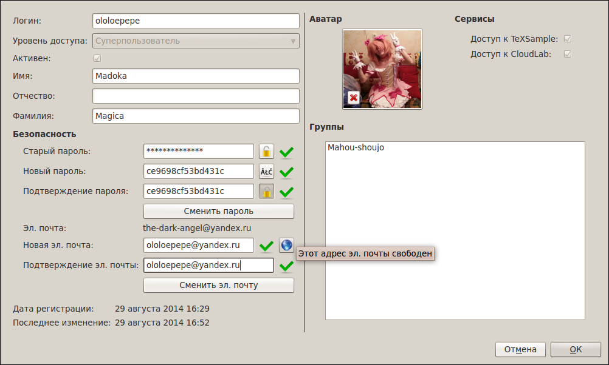
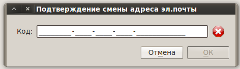
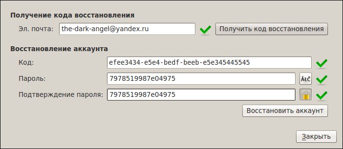

[Назад: 4.1. Регистрация]
[Далее: 4.3. Администрирование]
Управление аккаунтом и восстановление
Управление аккаунтом
После того, как вы зарегистрировались в системе TeXSample, вы можете в любое время редактировать свои данные, такие как
имя, фамилия, аватар, пароль и адрес электронной почты.
Логин менять нельзя.
Диалог управления аккаунтом выглядит следующим образом:

Информация об уровне доступа, принадлежности к группам, а также о доступныы сервисах приводится для информации и не
может быть изменена пользователем.
Для подтверждения изменений необходимо нажать кнопку ОК.
Смена пароля и адреса электронной почты
Пароль и адрес электронной почты меняются отдельно при помощи соответствующих кнопок. Необходимо ввести текущий пароль
и новый пароль/адрес электронной почты, а затем нажать на нужную кнопку. Проверить доступность адреса электронной почты
можно при помощи кнопки с изображением глобуса.
При смене адреса электронной почты на старый адрес придет уведомление, а на новый - код подтверждения, который
необходимо ввести в диалоге:

Код действует 24 часа. По истечение данного срока код перестает действовать. Если вы по какой-то причине не подтвердили
смену адреса электронной почты сразу, это можно сделать в течение 24 часов, выбрав пункт Подтвердить смену адреса
эл. почты... в меню TeXSample.
Восстановление аккаунта
Если вы забыли свой пароль, то можно восстановить его при помощи электронной почты. Для этого выберите в меню
TeXSample пункт Восстановить аккаунт... и укажите свой адрес электронной почты, указанный при регистрации
аккаунта, в открвшемся диалоге:

После нажатия кнопки Получить код восстановления на указанный адрес будет выслан специальный код, действующий в
течение 24 часов. Необходимо ввести этот код в поле ниже, а также задать новый пароль, после чего нажать кнопку
Восстановить аккаунт. Старый пароль, который вы забыли, будет заменен новым (указанным только что). Введите его
в настройках TeXSample и подключитесь к серверу.
[Назад: 4.1. Регистрация]
[Далее: 4.3. Администрирование]